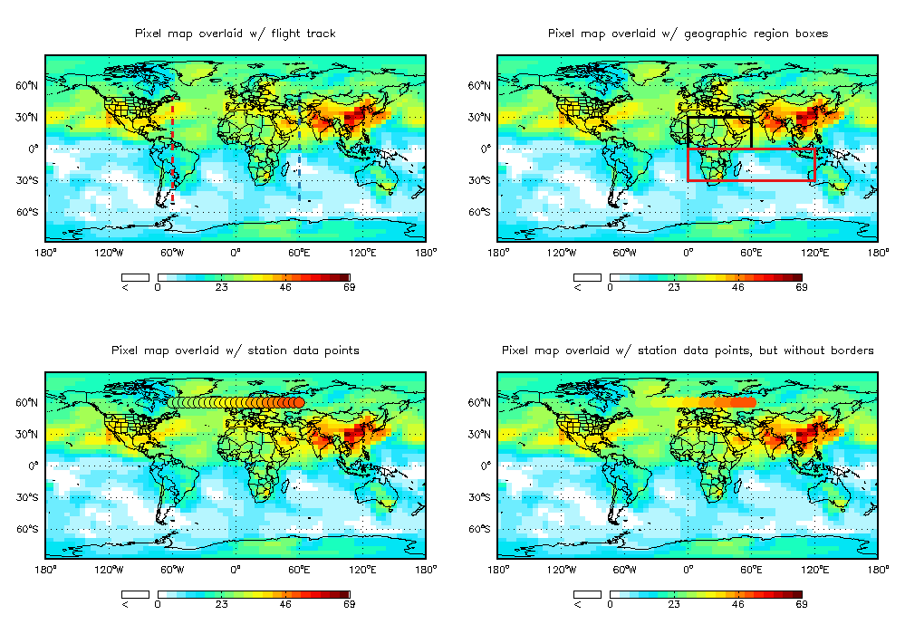

| GAMAP Last Updated 24 Jan 2014 What is GAMAP?
| Who designed GAMAP? |

|

GAMAP
-
is a self-contained, consistent, and user-friendly software package for reading and visualizing output from chemical tracer models (CTM's)
-
consists of a suite of routines written in IDL (Interactive Data Language)
-
makes extensive use of IDL's powerful plotting features
-
can produce line plots, 2D plots, 2D animations, or 3D isocontour surface plots
-
can read 2D, 3D or 4D data blocks
-
can read output from the GEOS–Chem, GISS and FSU model families
-
can be easily customized to keep pace with ongoing model development
-
can be installed on any platform that supports IDL, thus ensuring a high degree of portability
-
can be coupled with the ION (IDL on the Net) interface to create interactive plots which can be served to a web page
-
can read data from ASCII, binary, netCDF (including COARDS conventions!), and HDF–EOS file formats
-
contains helper routines to read from / write to various file formats
The main GAMAP program contains a user-friendly, menu-driven interface; however, users may also call GAMAP subroutines independently of the main program. This makes it possible to embed GAMAP routines within existing IDL code.
GAMAP is the standard software package used for visualization of output generated by the GEOS–Chem model. GEOS–Chem user groups are located at several institutions worldwide..

GAMAP was developed by Martin Schultz and Bob Yantosca at Harvard University's Atmospheric Chemistry Modeling Group. At the time, they were looking for a way to visualize results from both the GISS–II and GEOS–Chem chemical tracer models, which had different output file formats. Rather than forcing both the GISS–II and GEOS–Chem to adhere to a common file format, Martin and Bob wrote GAMAP so that it could read and plot data from both models equally well.
This philosophy of "customizing GAMAP to fit the model" continues to drive further GAMAP development today. GAMAP's functionality has been extended to include support for the Harvard–FSU model, as well as for empirical data on arbitrary Cartesian grids. GAMAP has also kept pace with the ever-changing GEOS–CHEM model, and can now read GEOS–Chem output generated with GEOS–3, and GEOS–4, GEOS–5 or GISS/GCAP meteorological fields. GAMAP has also been extensively modified to take advantage of IDL's facilities for reading different types of file formats, including netCDF, HDF, and HDF–EOS.
The GEOS–Chem Support Team now continue to publish the standard GAMAP code. They are responsible for all further GAMAP development.

Here are some plots that were created with the GAMAP package. GAMAP can save to a number of file graphic formats, including GIF, JPG, Windows BMP, PNG, TIFF, and PostScript.


Smooth pixel plot of GEOS–CHEM ozone concentrations


Latitude slice of of GEOS–CHEM ozone concentrations
Polar plot of of GEOS–CHEM ozone concentrations

Zonal mean contour plot of GEOS–CHEM CO concentrations

Multi-panel map plots of GEOS–CHEM tracers

4 panel difference plot
(created with GAMAP helper routine CTM_PLOTDIFF)


Image maps overlaid with various data
(created with GAMAP helper routine CTM_OVERLAY)

Click HERE to learn more about how these plots were created. In addition to these static images, GAMAP can also produce animations of timeseries output. Click HERE to learn more.
This page is maintained by Bob Yantosca (yantoscaseas.harvard.edu).

http://acmg.seas.harvard.edu/gamap/index.html